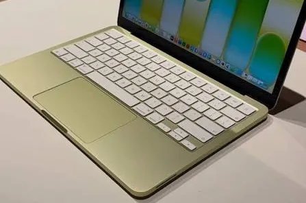
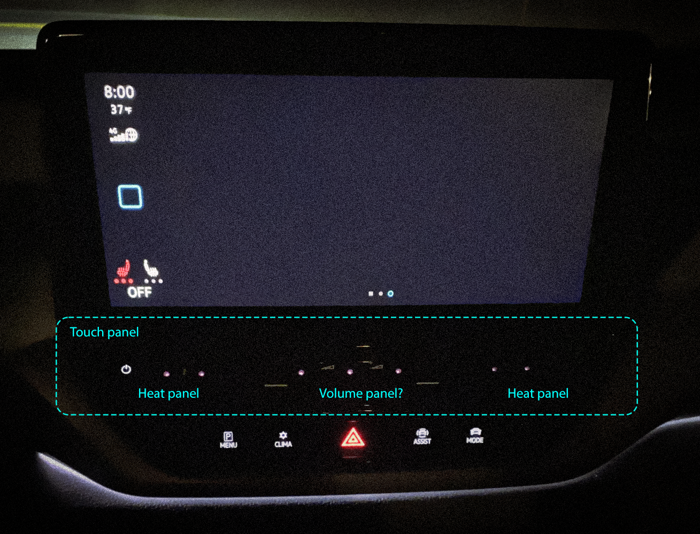
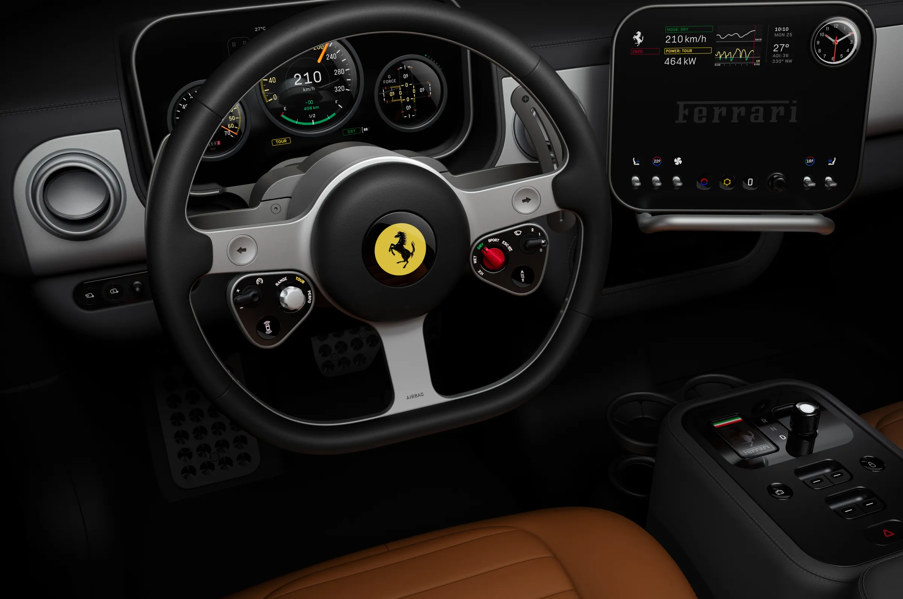

On haptic feedback, muscle memory, and why removing physical controls from cars might be the most underrated UX mistake of the last decade.
An unhealthy fascination with music and one too many hours lost on YouTube once landed me on the channel of some Australian guy. A genuinely funny man who talked, at length, about Shrek and iPods. Lucky for me, this was also a window when you could still pick up more iPods than any reasonable adult needs, for a fraction of what they go for now.
Not the most UX-brained way into a case study, I know. But using that old hardware again pulled me straight back to years of feature phones — and to the fact that responsiveness and feedback had already hit a peak, long before anyone was calling it that. The good old days, as we say.
Purpose-built · Direct feedback · Mechanical
The BlackBerry Storm solved this by brute force: the whole screen was a physical button, hinged underneath, so the entire surface clicked down when you pressed it. It felt slightly ridiculous at the time. It also happens to be, more or less, the same idea behind the MacBook Neo's trackpad — a single mechanical switch under the surface that actually clicks, no simulation involved, unlike every other MacBook trackpad Apple's shipped for the last decade.
Microswitches are cheap to produce and simple to repair. Pressure-sensing glass — the kind old iPhones used to detect a hard press — is neither. That's not a small detail. It's often the difference between a good idea shipping and a good idea getting quietly shelved.
Some designs aren't wrong. They're just early, or expensive, or waiting for the rest of the industry to catch up.
The iPod's click wheel plays a different trick entirely. There's no mechanical wheel under there — no dial, nothing that spins. It's a flat, static touch surface. The sensation of turning something is emulated: as your thumb moves across it, a click plays through the speaker, timed to each step, and your brain fills in the rest — a wheel that isn't actually there, made of nothing but well-timed sound.

Glass vs feel · Screen vs safety · Distraction
Somewhere around the early 2010s, the industry collectively decided that flat was the elegant way to do things. Not because anyone had proven it was actually better to use — but because of what happened in 2007. The first iPhone showed the world you could build something genuinely good, something people were willing to lose their minds over. The problem was never Apple. It was every company that watched that happen and, without stopping to understand why it worked, rushed to copy the surface of it: a flat sheet of glass, cheaper to produce, less material, no moving parts to engineer around. You don't do that kind of copying with any margin for care.
The skeuomorphic era ended and took the physical metaphors with it along the way. Flat design was cleaner, more modern, more honest about what it was.
The problem is that "honest about what it is" isn't the same as "better to use."
Cars were where this got genuinely dangerous. Touch-sensitive buttons with no haptic response, no click, no confirmation. Backlighting hidden behind a sleep mode. Controls for climate, volume, seat heating — things a driver adjusts constantly — buried under menu layers or moved to surfaces you have to look at to find. Tesla made this their identity. It wasn't just a design choice, it was a philosophy: learn the new way, trust the screen.
Some people adapted. A lot of people didn't, and drove slightly less safely while figuring out how to turn the heated seats on at 120km/h. VW went a step further with the climate control strip on cars like the ID.3 and Golf Mk8 — a touch-sensitive slider with no backlighting, so in the dark you're sliding a finger along a strip you can't see, guessing at where the temperature marks are, hoping you land somewhere close to what you meant.
Regulatory shift · Physical controls return · Course correction
Recently, Euro NCAP — Europe's independent car safety assessor, not a lawmaker, but the body that decides whether a car earns five stars — tightened its criteria. Starting January 2026, cars without physical controls for turn signals, hazard lights, the horn, wipers and the emergency call system simply won't score full marks. Not a ban. A quiet penalty for anyone who kept betting on glass.
China went further. In July 2026, the Ministry of Industry and Information Technology finalized a regulation covering gear selection, ADAS on/off, defrosters, power windows, even a physical kill switch for EVs — every control has to work by feel, without looking, and it has to keep working even if the main system crashes. It takes effect in 2027, but the direction is already clear: the industry that spent a decade removing buttons is now being told, by two of its biggest markets, to put them back.
This is what a course correction looks like when the industry won't do it itself.
Ferrari's Luce is the more interesting version of this argument — not a concept anymore, a real car, unveiled in Rome in May 2026. The interior was designed by Jony Ive and Marc Newson's studio, LoveFrom, and it's built around "precision-engineered mechanical buttons, dials, toggles, and switches" instead of a screen doing everything. Ive, who spent decades at Apple defining what premium touch interaction feels like, said modern cars are missing something his old Ferraris had — tactility — and that the team went looking for every possible way to physically, viscerally connect the driver to the interface. Wired's reviewers put it more simply: everything in the Luce feels satisfyingly clicky, or satisfyingly twisty.
That's a different question than "how many functions can we put on this display."


Universal design · Human variability · Primary channel
There's another dimension to this that doesn't get talked about enough.
Capacitive touchscreens depend on conductivity. Sweaty hands. Cold hands. Gloves. Worn fingerprints — a real condition, more common than you'd think, that affects elderly users, people who work with their hands, certain chemotherapy patients. For these users, a flat glass surface isn't just less satisfying. It literally doesn't work.
Voice control solves some of this. But voice has its own failure modes: accents, ambient noise, the social discomfort of talking to your car in a parking garage. It's an additional channel, not a replacement.
The pattern here is the same one that shows up everywhere in design when you mistake preference for universal truth. "Touch is better" is a preference, held by people with typical hands, in typical conditions, who made the decision. Physical feedback isn't a legacy constraint — it's a human one.
Tesla's approach — remove the familiar, force the new behaviour — works when the new behaviour is genuinely better for everyone, and when people have the time and safety margin to learn it. In a phone, fine. In a moving vehicle, the calculus is different.
The deeper issue is that we treat the removal of physical controls as progress by default. Less stuff, cleaner surface, more software-updatable. But the sense of touch is not a workaround for people who haven't learned to use screens properly. It's a primary input channel. Haptic feedback isn't decoration — it's the thing that lets your hands operate independently of your eyes.
We knew this in 2004. The iPod wheel proved it. We forgot it for a decade because flat looked better in marketing photos.
Some things that feel like regressions are actually just corrections.
Have a project in mind? I'm always open to discussing new opportunities, collaborations, or just to say hello.